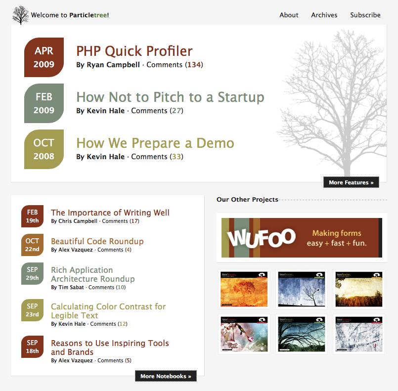
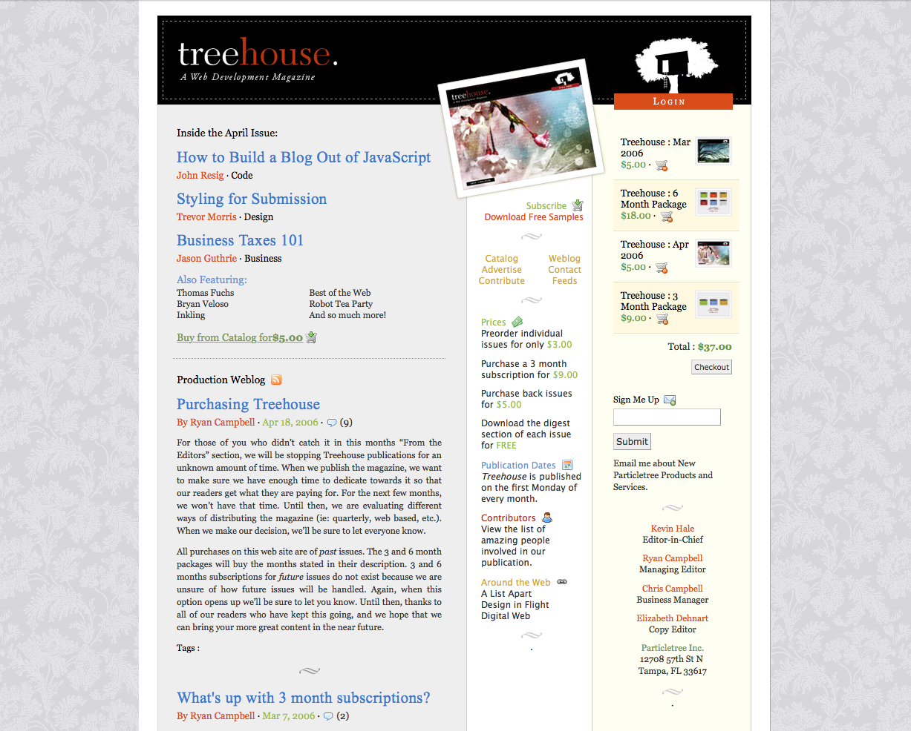

Particletree
I credit Particletree with any success I have. Chris, Kevin and I were forced to push ourselves, stick to schedules, learn to work together, and generally get inspired.

It all started when the three of us went to SXSW and heard Jason Fried speak. He said one thing that stuck – anybody can do this. Convinced that we were anybodies, we got home from our trip and immediately setup a blog to learn and grow our network.
We wrote, and we learned, and we wrote, and we learned. Traffic grew. Comments increased. One day, we reached the top of slashdot for the third time, and were conviced we could monetize the traffic. That same day, Kevin and I decided to quit our jobs while Chris split his paycheck 3 ways. We were going to launch a magazine version of Particletree and charge per issue. That was the birth of Treehouse Magazine.

Little did we know, we would apply for YCombinator shortly after, and get accepted. Particletree played a role in our accetpance, Treehouse Magazine stopped at issue 6, and our future was about to change.